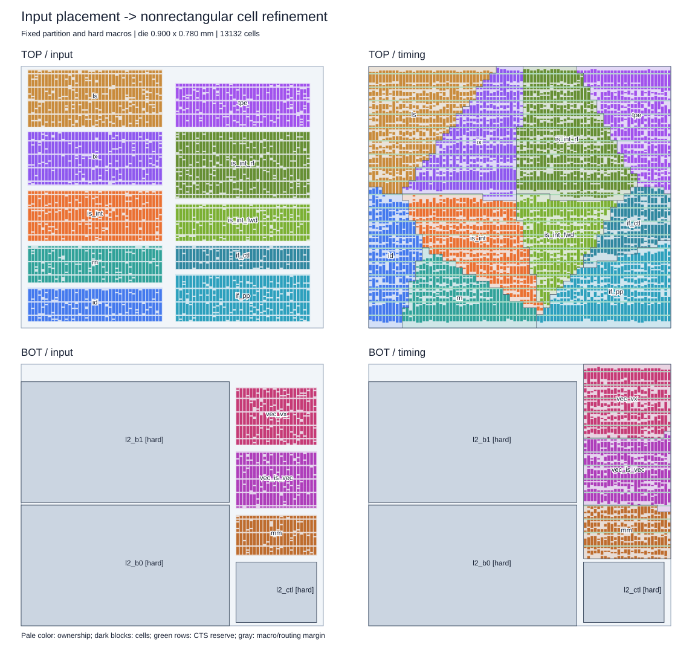
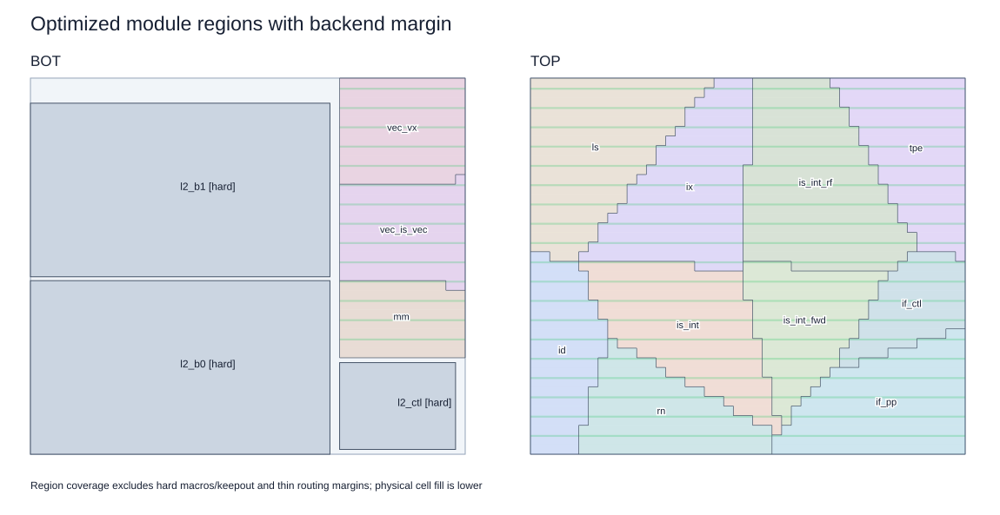
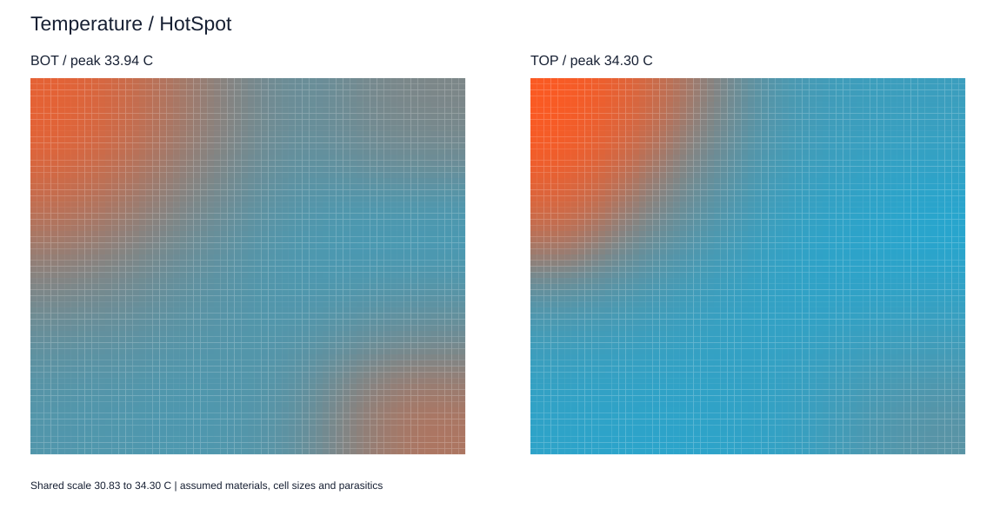
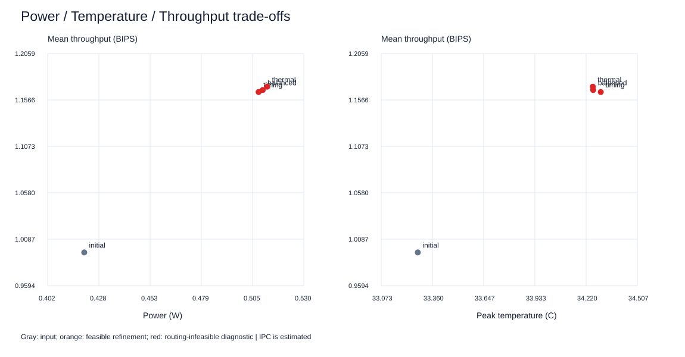

最优解配置提供几何、分层和硬模块；退火配置提供功耗、互连及物理参数。参考温度不用于反推功耗。当前 cell 尺寸、内部网络和 RC 仍为估算。
所选候选：timing（诊断候选，存在拥塞违例）；温度后端：HotSpot。IPC 为解析估计。
实际 cell 利用率：BOT 47.6%、TOP 49.6%；预留约 10% 行用于 CTS，cell 两侧各留 1.0 μm padding。领地填满不等于实体 cell 填满。
| run | frequency_GHz | power_W | peak_C | mean_bips | nominal_WNS_ps | nominal_TNS_ns | route_overflow_tracks | feasible |
|---|---|---|---|---|---|---|---|---|
| initial | 1.10013 | 0.42049 | 33.27763 | 0.99465 | -598.59212 | -1815.62098 | 7255.0 | False |
| balanced | 1.33441 | 0.50969 | 34.25981 | 1.16712 | -430.10616 | -1724.74988 | 7694.0 | False |
| timing | 1.33144 | 0.50765 | 34.30236 | 1.165 | -432.30019 | -1711.11033 | 7533.75 | False |
| thermal | 1.33937 | 0.51194 | 34.25789 | 1.17065 | -428.29205 | -1730.38545 | 7570.75 | False |



